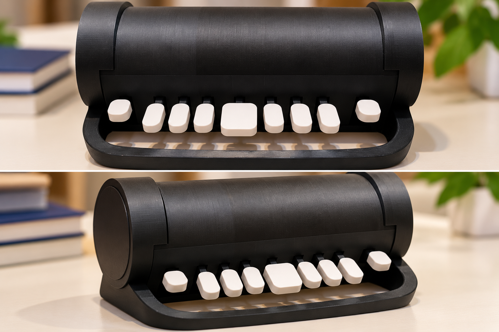

Autonomía
Las funciones esenciales se diseñan para operar localmente y sin depender de servicios externos.
Tecnología educativa · Braille · Accesibilidad
Multilingüe Braille System
Un sistema educativo para aprender y practicar Braille mediante un teclado físico y una WebApp accesible, con funcionamiento local y autónomo.

MBS integra un teclado basado en los seis puntos de la celda Braille, un microcontrolador ESP32-S3 y una WebApp educativa. El estudiante ingresa combinaciones Braille y recibe realimentación inmediata mediante texto, recursos visuales y síntesis de voz.
El objetivo no es solamente escribir caracteres. El sistema está concebido como una herramienta para acompañar progresivamente el aprendizaje, la práctica y la evaluación del Braille.
El diseño mantiene un flujo simple y comprensible:
El propio MBS puede crear una red Wi-Fi local. Un teléfono, tablet o computadora se conecta a ella y accede a la WebApp mediante el navegador. Las funciones esenciales no requieren Internet.
La disposición física toma como referencia la celda Braille de seis puntos y la lógica de escritura tipo Perkins. El diseño busca que la tecnología acompañe el aprendizaje sin convertirse en una barrera adicional.
La realimentación puede adaptarse a actividades de aprendizaje, práctica y evaluación.
Las funciones esenciales se diseñan para operar localmente y sin depender de servicios externos.
Se priorizan navegación por teclado, compatibilidad con tecnologías de asistencia, claridad y baja carga cognitiva.
Cada función debe aportar al aprendizaje y preservar la estabilidad y sencillez del sistema.
MBS es un prototipo funcional en fase de validación. Su evolución es incremental: primero se estabilizan las funciones esenciales y luego se incorporan nuevas capacidades.
Ingreso mediante combinaciones de los seis puntos Braille y teclas de control.
WebApp local con realimentación y síntesis de voz.
Red Wi-Fi propia para utilizar el sistema sin conexión a Internet.
Desarrollo progresivo de soporte para distintos idiomas y contenidos educativos.
Próxima etapa orientada a obtener experiencias de uso en contextos educativos reales.
La demo pública permite experimentar desde un navegador con las actividades educativas de MBS, sin disponer del teclado físico. Incluye cuatro idiomas, lecciones y realimentación visual y hablada.
Docentes, estudiantes, personas usuarias de Braille e instituciones pueden aportar experiencias y observaciones para mejorar MBS. La validación en contextos reales es una parte esencial de la evolución del proyecto.
Este espacio irá incorporando información sobre la red de colaboradores, experiencias de validación y formas de participación.
Este sitio se desarrolla procurando que sus contenidos y funciones puedan utilizarse mediante teclado y tecnologías de asistencia. Se priorizan estructura semántica, foco visible, contraste suficiente, texto legible y navegación predecible.
No declaramos todavía una conformidad formal con WCAG 2.2 AA. El sitio será revisado progresivamente y agradecemos que se comuniquen las barreras de accesibilidad que puedan encontrarse.